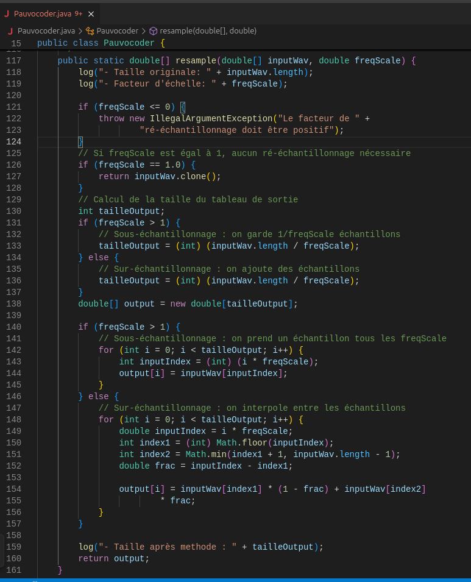

À propos du projet
le vocoder du pauvre ou pauvocoder est un projet Java qui permet de modifier le son d'un fichier audio en ajoutant des effets tels que l'écho. Il est conçu pour être simple à utiliser tout en offrant des fonctionnalités intéressantes pour le traitement du son.
Fonctionnalités principales
- modifie le son
- ajout d'echo
Technologies utilisées
Traces
La figure montre une méthode Java resample définie dans la classe Pauvocoder. Elle prend un tableau de double représentant un signal audio (inputWav) et un facteur d’échelle (freqScale) pour produire un signal ré-échantillonné. Cette méthode illustre un traitement algorithmique typique dans le domaine du traitement du signal numérique.
Le code commence par gérer les cas limites : un facteur d’échelle nul ou négatif déclenche une exception, et un facteur égal à 1 retourne une simple copie. Ces conditions montrent l’usage de tests logiques précis. Ensuite, selon que freqScale est supérieur ou inférieur à 1, la méthode choisit entre sous-échantillonnage (on enlève des données) ou sur-échantillonnage (on en ajoute par interpolation).
Lors du sur-échantillonnage, l’interpolation linéaire entre deux échantillons successifs est calculée avec soin en manipulant les indices de manière sécurisée (Math.floor, Math.min). Cela suppose des connaissances en algèbre et en manipulation de tableaux en Java. La logique est encapsulée dans une boucle bien structurée, ce qui témoigne d’un savoir-faire algorithmique clair.
La méthode est static et bien isolée, ce qui améliore sa réutilisabilité. Le programme affiche également des logs pour aider au débogage, montrant une attention portée à la lisibilité du code. Cette figure illustre ainsi des compétences en programmation Java, notamment en gestion de tableaux, traitement conditionnel et interpolation, toutes essentielles pour le développement d’outils numériques robustes.